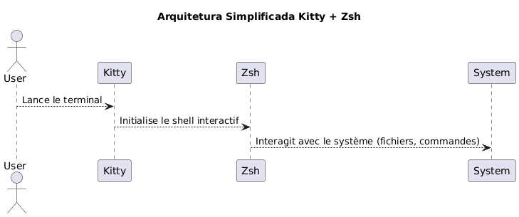
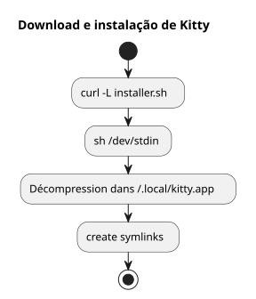
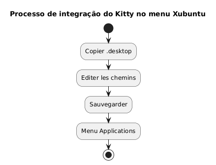
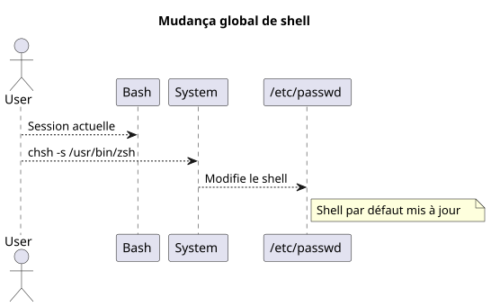
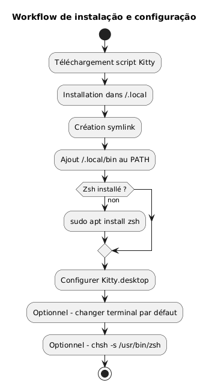
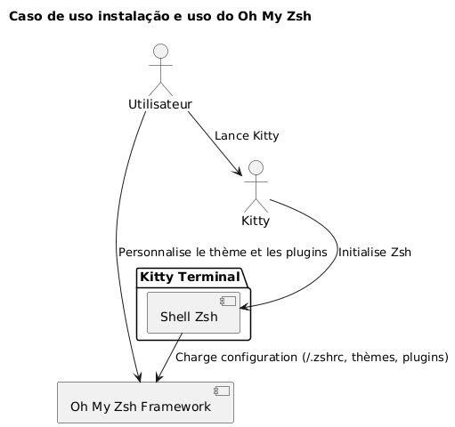
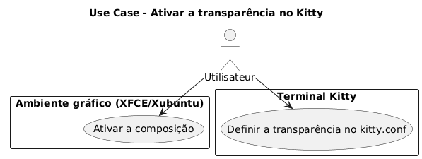
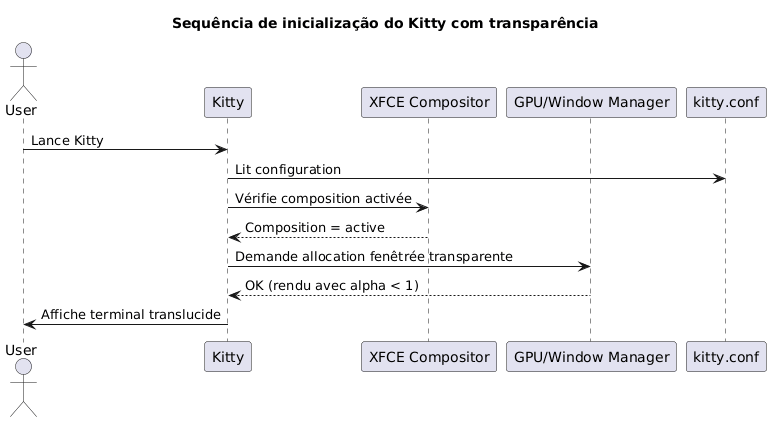

Instalar o terminal Kitty e configurar o Zsh como shell padrão no Xubuntu
Publié le 07 May 2026 Mis à jour le 2026-05-07
- Por que escolher o Kitty e o Zsh?
- Pré-requisitos do sistema
- Download e instalação do Kitty
- Integração do Kitty no Xubuntu
- Instalação do Zsh
- Definir o Zsh como shell padrão
- Configuração do Zsh (opcional)
- Resumo do workflow completo
- Verificação final
- Instalação e configuração do Oh My Zsh
- Ativar a translucididade no Kitty
- Desativar o sinal sonoro (sino audível)
- Atualização de Kitty
- Referências
- Conclusão
Este guia explica passo a passo como instalar o terminal kitty no Xubuntu, configurá-lo corretamente e substituir o bash por zsh como shell padrão. O projeto kitty está disponível aqui: https://github.com/kovidgoyal/kitty.
_ Kitty é um terminal moderno, rápido e configurável, particularmente adequado para desenvolvedores exigentes. _
Por que escolher o Kitty e o Zsh?
Kitty distingue-se por :
-
Desempenhos superiores graças à aceleração da GPU,
-
Uma configuração totalmente baseada em um arquivo de texto único,
-
Um excelente suporte a fontes e ligaduras
Zsh, por outro lado, é um shell interativo poderoso que oferece :
-
Uma conclusão inteligente,
-
Um prompt personalizável,
-
Uma grande compatibilidade com o bash.
Ao combinar Kitty e Zsh, você desfruta de um ambiente produtivo e estético.

|
Este guia é intencionalmente limitado à instalação via script e ao Xubuntu. |
Pré-requisitos do sistema
Antes de começar, certifique-se de ter :
-
Xubuntu instalado,
-
acesso à internet,
-
um shell bash funcional para lançar o script.
Verifique seu ambiente:
uname -a
lsb_release -aDownload e instalação do Kitty
Kitty recomenda instalá‑lo via um script oficial que coloca os arquivos em`~/.local/kitty.app`.
|
Este método é independente dos gerenciadores de pacotes (sem`apt`). |
Baixar o script de instalação
Execute o seguinte comando :
curl -L https://sw.kovidgoyal.net/kitty/installer.sh | sh /dev/stdinEste comando executa:
-
download dos binários,
-
extração em`~/.local/kitty.app`,
-
criação dos links simbólicos.

Criação dos links simbólicos
Para poder invocar`kitty`A partir do terminal, crie um link simbólico :
ln -s ~/.local/kitty.app/bin/kitty ~/.local/bin/kittyAdicione`~/.local/bin`adicionar ao seu PATH se ainda não o tiver feito :
echo 'export PATH="$HOME/.local/bin:$PATH"' >> ~/.zshrc
source ~/.zshrcVocê pode verificar a instalação:
kitty --versionIntegração do Kitty no Xubuntu
Para que Kitty appele no menu de aplicativos :
Copiar o arquivo da área de trabalho
Copie o arquivo`.desktop`fornecido :
cp ~/.local/kitty.app/share/applications/kitty.desktop ~/.local/share/applications/Editar o ficheiro desktop
Edite o arquivo :
nano ~/.local/share/applications/kitty.desktopVerifique ou modifique as linhas seguintes :
[Desktop Entry]
Version=1.0
Type=Application
Name=Kitty Terminal
Comment=Fast GPU-based terminal emulator
Exec=/home/$USER/.local/kitty.app/bin/kitty
Icon=kitty
Categories=System;TerminalEmulator;Substitua`YOURUSER`pelo seu nome de usuário

Associar Kitty como terminal padrão (opcional)
Para que Kitty seja o terminal iniciado por padrão:
sudo update-alternatives --install /usr/bin/x-terminal-emulator x-terminal-emulator ~/.local/kitty.app/bin/kitty 50
sudo update-alternatives --config x-terminal-emulatorSelecione`kitty`no menu proposto.
Instalação do Zsh
Se o Zsh ainda não estiver instalado, execute:
sudo apt install zshVerifique a instalação:
zsh --versionDefinir o Zsh como shell padrão
Você pode mudar seu shell globalmente ou apenas no Kitty.
Método global (para todos os terminais)
Identifique o caminho absoluto:
which zshEm geral`/usr/bin/zsh`.
Altere o shell padrão:
chsh -s /usr/bin/zshDesconecte-se e reconecte-se.

Método específico para Kitty
Se você prefere apenas mudar o shell no Kitty, edite o arquivo de configuração :
nano ~/.config/kitty/kitty.confAdicione esta linha :
shell zshSalve e reinicie o Kitty.
Configuração do Zsh (opcional)
Para personalizar seu Zsh:
Criar um arquivo .zshrc
touch ~/.zshrc
nano ~/.zshrcExemplo de configuração mínima
export ZSH_THEME="robbyrussell"
export PATH="$HOME/.local/bin:$PATH"
alias ll="ls -la"Resumo do workflow completo
O esquema abaixo resume todo o processo :

Verificação final
Lance Kitty :
kittyVocê deveria ver que`zsh`está ativo :
echo $SHELLResultado esperado :
/usr/bin/zsh
Para modificar o tamanho da fonte emKitty, é preciso ajustar o parâmetro`font_size`no arquivo de configuração. Aqui está o procedimento detalhado :
📂 Abrir o arquivo de configuração
O arquivo principal de configuração geralmente está localizado em :
~/.config/kitty/kitty.confSe este arquivo ainda não existir, você pode criá-lo. Exemple :
nano ~/.config/kitty/kitty.conf�🖋️ Adicionar ou modificar `font_size
Adicione a diretiva a seguir, ou modifique-a se ela já existir:
font_size 14.0Aqui`14.0`Corresponde ao tamanho desejado. Você pode colocar qualquer valor decimal, por exemplo`12.0`, 15.5, etc.
💾 Salvar e reiniciar Kitty
-
Salve (
Ctrl + O, então`Entrée`) e saia (Ctrl + X) se você usa`nano`. -
Feche todas as janelas do Kitty, depois reinicie o terminal para que a mudança tenha efeito.
�✅ Ajuste dinâmico (Zoom temporário)
Se você deseja zoomer/dézoomer temporariamente sem modificar a configuração, utilize os atalhos de teclado padrão:
-
Aumentar o tamanho da fonte:
Ctrl + Shift + =
-
Diminuir o tamanho da fonte:
Ctrl + Shift + -
-
Redefinir o tamanho</think>
Ctrl + Shift + Backspace
Essas configurações não persistem após o fechamento do terminal.
Instalação e configuração do Oh My Zsh
Uma vez que o Zsh esteja instalado e configurado como shell padrão, você pode enriquecer seu ambiente com Oh My Zsh, um framework de gerenciamento de configuração do Zsh, oferecendo:
-
uma coleção de temas para o prompt,
-
muitos plugins,
-
uma organização clara da configuração.
Instalação do Oh My Zsh
Certifique-se de que o Zsh está ativo :
zsh --versionSe necessário, lance :
zshEm seguida, baixe e execute o script de instalação oficial:
sh -c "$(curl -fsSL https://raw.githubusercontent.com/ohmyzsh/ohmyzsh/master/tools/install.sh)"Este script:
-
crie a pasta`~/.oh-my-zsh`,
-
salva eventualmente seu arquivo`~/.zshrc`,
-
ativa automaticamente o novo prompt.
Mudar o tema
Abra o seu arquivo de configuração:
nano ~/.zshrcAltere a variável`ZSH_THEME`para escolher outro tema (por exemplo`agnoster`) :
ZSH_THEME="agnoster
Salve e recarregue a configuração :
source ~/.zshrcVerificação
Inicie o Kitty e verifique se o prompt foi alterado corretamente. Você pode confirmar que o Oh My Zsh está ativo executando:
echo $ZSHO resultado deveria ser similar a :
/home/seu_utilizador/.oh-my-zsh
Diagrama do caso de uso

Ativar a translucididade no Kitty
Uma das funcionalidades mais apreciadas do Kitty é a possibilidade de adicionar transparência ao fundo do terminal. Isso permite ver levemente o ambiente subjacente (janela, área de trabalho, etc.), o que é particularmente útil em multitarefa.
Pré-requisito para a transparência
A transparência no Kitty baseia-se nocompositor de janelasusado pelo ambiente gráfico. No Xubuntu (baseado em XFCE), certifique‑se de que acomposição está ativada.
So output:.A verificar :
Proceed.
</think>
-
clique com o botão direito na área de trabalho > Configurações >Parâmetros do gerenciador de janelas,
-
abaCompositor: a caixa
Activer la compositiondeve estar marcada.

Configuração de transparência no kitty.conf
Abra o seu ficheiro de configuração`~/.config/kitty/kitty.conf` :
nano ~/.config/kitty/kitty.confAdicione ou modifique as linhas seguintes:
background_opacity 0.85Este parâmetro aceita valores entre :
-
1.0→ opaco (nenhuma transparência), -
0.0→ totalmente transparente (inutilizável) -
valores intermediários como`0.90`,
0.75, etc.
Um bom compromisso visual geralmente está entre`0.85` et 0.95.
Reiniciar Kitty
Feche todas as instâncias do Kitty e, em seguida, reinicie uma nova janela para que as alterações tenham efeito :
kittyComplementos possíveis
Se você usa um fundo de terminal personalizado, também pode definir uma cor de fundo com transparência (em RGBA) :
background #1e1e2effÚltima componente ()ff) indica a opacidade (de`00` à ff)
Diagrama de sequência - Inicialização da Kitty com transparência

Limitações conhecidas
|
A translucidez não funciona se: - o compositor XFCE está desativado, - um gerenciador de janelas incompatível é utilizado, - você está usando Kitty no modo tmux em segundo plano sem suporte de transparência. |
Desativar o sinal sonoro (sino audível)
Por padrão, o Kitty emite um som de bip quando um comando errado é inserido ou quando um evento de terminal o dispara. Este som pode rapidamente se tornar incômodo, especialmente em um ambiente de desenvolvimento intenso.
Para desativar esse comportamento, adicione a seguinte diretiva ao arquivo`~/.config/kitty/kitty.conf`:
audible_bell no|
Você também pode ativar um retorno visual em substituição ao bip sonoro : |
Atualização de Kitty
Como o Kitty é instalado por meio de um script e não por um gerenciador de pacotes, a atualização é feita ao relançar o script de instalação oficial. Isso permite baixar a versão mais recente e atualizar sua instalação existente em`~/.local/kitty.app`.
|
O sufixo`.app`no caminho`~/.local/kitty.app`é a convenção de instalação do Kitty no Linux via o seu script oficial, e não indica de forma alguma uma compatibilidade exclusiva com o macOS. |
|
Antes de executar o comando de atualização, certifique-se de estar no seu diretório pessoal ( |
Execute o seguinte comando a partir do seu diretório pessoal:
curl -L https://sw.kovidgoyal.net/kitty/installer.sh | sh /dev/stdinEste script cuidará de:
-
Baixar os binários da nova versão.
-
Extrair os ficheiros em`~/.local/kitty.app`.
-
Atualizar os links simbólicos se necessário.
Após a atualização, recomenda-se fechar todas as instâncias do Kitty e reiniciá‑las para garantir que a nova versão seja reconhecida.
Referências
Se você quiser aprofundar a personalização, consulte a documentação oficial:
Conclusão
Você dispõe agora :
-
de um terminal moderno e performante (Kitty)
-
um shell poderoso e personalizável (Zsh)
-
de uma configuração limpa e independente dos pacotes do sistema
-
de um terminal estético e funcional equipado com Oh My Zsh